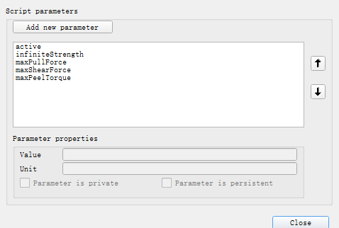
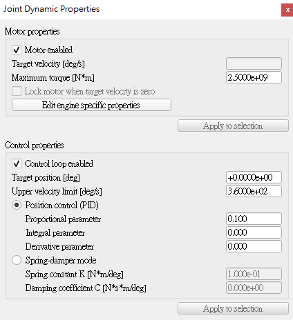
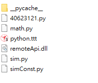

Week15 <<
Previous Next >> Week17
Week16
MTB_robot 取放方塊流程
1. Onshape 零組件繪製
利用onshape軟體參考 MTB_robot 並繪製出一個組件相似的mtb_robot。
圖檔連結 :
https://cad.onshape.com/documents/32cde3f6802dd89685eddff5/w/76107044dbe1d78bc3ff0d6b/e/1b23389c5ce43ea5d81a4977
操作影片 :
2. 建立 CoppeliaSim 4.1.0 MTB robot 場景
將組合好的MTB_模型以stl檔匯出之後匯入coppeliasim裡，並利用Leo Editer以require導入lua程式運作，分別控制各軸轉動。
Google Drive:
https://drive.google.com/file/d/1Ppl7lwSd5PQIdc0V-gI1-slmAlB7n5l2/view?usp=sharing
程式碼需要參考可以下載上面連結裡的lua檔案
if (auxiliaryData[1]==49) then --r right turn in degree
-- if key 1 pressed axis1 angle adds 5 degrees
rotation1 = rotation1 + 5*deg
sim.setJointPosition(axis1, rotation1)
end -- if 1
if (auxiliaryData[1]==50) then --l left turn in degree
-- if key 2 pressed axis1 angle substract 5 degrees
rotation1 = rotation1 - 5*deg
sim.setJointPosition(axis1, rotation1)
end -- if 2
if (auxiliaryData[1]==52) then --l left1 turn in degree
-- if key 4 pressed axis1 angle substract 5 degrees
rotation2 = rotation2 + 5*deg
sim.setJointPosition(axis2, rotation2)
end -- if 4
if (auxiliaryData[1]==53) then --r left2 turn in degree
-- if key 5 pressed axis1 angle substract 5 degrees
rotation2 = rotation2 - 5*deg
sim.setJointPosition(axis2, rotation2)
上方程式碼是這個取分項目的重點，==後的數字是分別代表鍵盤的代碼，我的是使用數字1、2來操控大軸，數字4、5來操控小軸。
操作影片 :
3. 手臂末端加入 components-gripper-suction pad 吸盤
接續上一個取分項目使用的MTB_robot，在繪製的吸盤零件末端加上一個force sensor並接上suction pad。
Google Drive:
https://drive.google.com/file/d/1joVVPnSevFK1cdNXeTmb-A3iSABC1DS4/view?usp=sharing
程式碼一樣可以參考上方連結的lua檔，下方圖片是比較需要調整的參數，calibration是校正的參數，因為吸盤離太進或離太遠都會沒辦法讓dummy附著到cuboid上，所以要慢慢找適合自己組合圖的參數。
function sysCall_actuation()
calibration = 0.002
然後要把吸盤的user parameters的active的value加上true，這樣吸盤靠近方塊時就能自動吸取了。

操作影片 :
4. 逆向運動學函式
根據 W15 線上課程內容之 Inverse Kinematics 方程式，用程式指定方塊取放兩個位置，分別是 (0.2, 0.7, 0.05) 與 (-0.3, -0.55, 0.05)，一樣可以接續之前的ttt檔做更改使用。
Google Drive:
https://drive.google.com/file/d/1CEOEhOYhh9_C5nQH3Gul1xo2tbp8I7GZ/view?usp=sharing
要注意的是要將joint的扭矩設為2.5e+9，不然跑程式時會瘋狂亂轉。

操作影片:
5. Python remote API 逆向運動學函式
這個取分項目是結合Task2所學的Python remote API 程式並以迴圈方式執行兩個指定位置之方塊取放。
Google Drive:
https://drive.google.com/file/d/1hczjw-DDXETi1h2k4MT0J5OMmPVLLp3T/view?usp=sharing
要注意的是要在資料夾下新增remoteApi.dll，sim.py,simConst.py,math.py這幾個檔案，這樣在Go的時候才能夠順利connect到remote api。

操作影片 :
五個取分項目皆在期限內完成，自評完成度100%
Week15 <<
Previous Next >> Week17